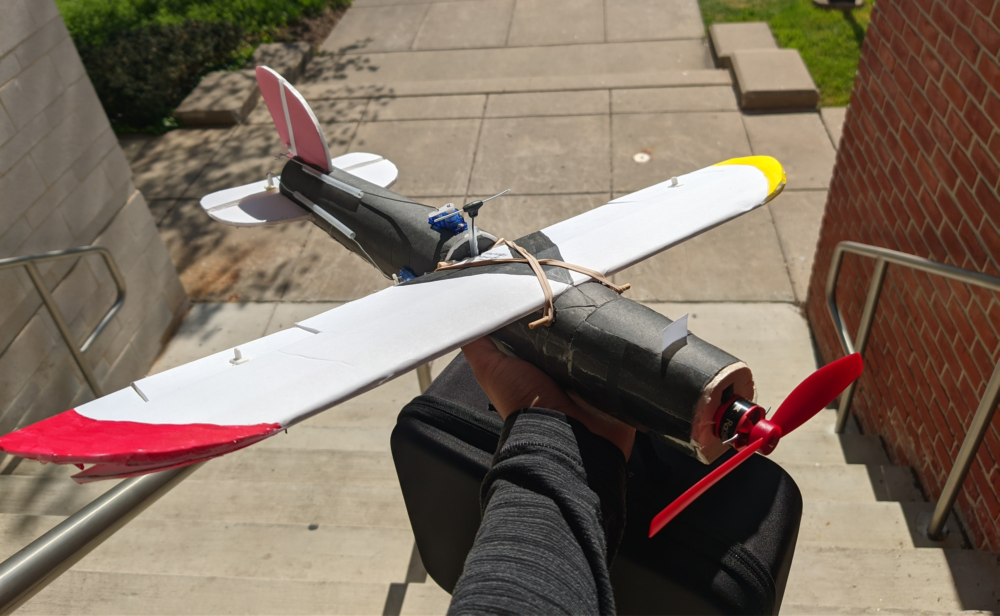

Unmanned Aerial Vehicles (UAVs)

Scratch built sub-250g acrobatic 'Dovetail Mini Warrior'
On weekend afternoons,
I enjoy walking to the local empty grass field,
conduct pre-flight checks,
and hand launching my remote-controlled (RC) airplane(s) into the air.
My passion for drones taught me the knowledge and skills to
custom design model airplanes from scratch,
gather construction and electronic components on a budget,
and fly fixed-wing aircraft and quadcopters without any assistive features.
I believe UAVs are a valuable resource for both
engineering education and scientific research.
Drones provide various rigors of expertise.
Simple foam airplanes can be built for under $100
with minimum technical skills
to inspire middle and high school students into the field of engineering.
More advanced drones such as payload carrying vehicles and VTOLs
provide a gateway for college students to utilize their course experiences.
In research, drones are used by geographers to survey large fields,
robotics scientists to develop new control algorithms,
and by aeronautical engineers to find better propeller blades designs that minimize noise.
Getting Started: Beginner RC Plane
This section is meant to be a guide for a beginner
who wants to build an aircraft on a budget.
Things that will be covered are:
- Pre-existing beginner guides
- Tools purchase list
- Parts purchase list (in progress)
- Building plans (in progress)
- Next steps (in progress)
Websites where I generally make purchases from are:
- HobbyKing:
Great place for wheels, propellers, and motors.
Has many other airplane materials,
but they are often expensive or out of stock.
- getfpv:
Great for quadcopter and FPV parts.
They also have great small propellers and batteries.
- Banggood:
RC on a budget. I use this commonly if I am in no rush
(shipping and delivery times are very long), there are
no cheaper option, and if the item is not too expensive.
Always read the reviews before making purchases here.
- AliExpress:
For items not found at a low cost from any of the above websites.
This is the best place to purchase open source and/or generic
lightweight items (such as ELRS receivers, Arduinos, etc.).
Like Banggood, this is based in China;
expect long shipping times and only purchase from stores that
have a rating of 97% and have been open for more than 2 years.
- Ebay:
Similar to AliExpress, but far better delivery times and reliability.
- FliteTest Store:
Really great place for kits and many DIY models.
They have build videos for many of their products,
so it is very hard to go wrong.
- Amazon:
I don't think I have to explain this one.
- Dollar Tree (in person):
Purchase foam boards, dowels, paint, etc. from here.
For foam board, ONLY purchase them from Dollar Tree!
Other brands (Elmer's, Ross board, etc.) are significantly heavier!
Pre-existing beginner guides
If you get tired of my guide,
there exists other tutorials on getting into this hobby.
The best and most useful,
in my opinion,
is
FliteTest's Beginner Series
.
I personally used their beginner series
and found it to be very informative yet easy to watch.
Here's a link to one of their build videos:
Flite Test Tiny Trainer
.
There is also the
Joytrainer Mini
that you can try.
Tools purchase list
The largest cost in getting into the hobby is
the initial cost due to tools.
However, keep in mind that you only need to buy these tools once.
Additionally, these tools are helpful for other projects such as
robotics, electronic repairs, and power supply.
Here's a list of non-electric tools to purchase:
- Needle nose pliers
(make sure that they can have the wire cutter section)
- Size 11 craft knife
(also known as x-acto knife)(make sure to get lots of blades)
- Full sized glue gun and glue sticks
(higher wattage rating is generally better)
- Pencils and 2 measuring rulers
(one should be dual units (metric and imperial),
and the other should be a yard or a meter long)
- Screwdrivers (Phillips head and hex head mainly)
Battery charger
You will need a dedicated battery charger for the lithium batteries.
I personally use
HTRC C150
because it is cheaper than other options, and comes with adapters and a battery bag.
If you want to purchase any other charger,
ensure that they are able to 'storage discharge' batteries
and have multiple failsafe options.
If you know you will be more involved in this hobby,
or are planning on flying quadcopters,
I have used and recommend the HTRC D240.
Radio Transmitter
A radio transmitter (TX) is needed to control the aircraft.
Keep in mind that a receiver (RX) is needed alongside.
Here are a few options:
-
FlySky FS-i6X if you are on a very tight budget
and do not intend on flying drones
or any other advanced aerial vehicles.
I recommend the FS-iA6B receiver for this.
-
Radiomaster Boxer (ELRS version).
I recommend this transmitter due to its middle ground
between high functionality and simplicity.
Joshua Bardwell did a review
that showcases this transmitter.
-
Radiomaster TX16s Mark II (ELRS version) if
you are sure you plan on doing high level
remote-control in the future.
Each of the above transmitters have their pros and cons.
However, as mentioned earlier, these are
tools
and they will stick around for a long time.
I recommend purchasing the Radiomaster Boxer transmitter
because it has all the functions you need,
is the second cheapest out of the list
(factoring in cost of upgrades and receivers),
and most importantly, the Radiomaster series is likely to stick
around for a very long time.
Additionally, I recommend getting the 'ELRS' option
since it is open sourced and rapidly growing in popularity and features.
For ELRS, make sure to get the 'FCC' version.
Any ELRS receiver can work with any ELRS TX.
However, for airplanes, you will typically want to get a PWM ELRS RX
with at least 4 usable PWM pins.
Example brands for the PWM ELRS RX include:
Radiomaster ER series, Mateksys, and Betafpv.
Solder station
As you progress, you will need a solder station
since many RC parts come unsoldered. When purchasing a solder station,
make sure that it
- has temperature control, and
- comes with different tips (especially a bevel or chisel tip).
Other things that I recommend having are:
- Sponge or brass wool
- Leaded solder
- Helping hands
- Solder sucker or solder wick (in case you need to remove solder)
I personally use the X-Tronic 3020 solder station.
If you have the budget, I recommend getting a soldering + hot air station,
since it will help you in the long run.
Parts purchase list
In progress.
Building plans
In progress.
Next steps
In progress.
Dovetail Scout: A Pusher Style A-Wing Aircraft with Headtracking
Write up in progress.
Dovetail Firestyle: A Cinematic/Freestyle 6" Quadcopter
In progress.